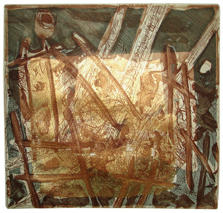

Frances Presley
Common pink metaphor: from The Landscape Room to Somerset Letters
Pre®amble
I grew up in the country, in Lincolnshire and later in Somerset, two very different counties of England: one in the lowlands of the east, and the other in the hill country of the south west. Yet my decision to write poetry was primarily shaped by that modernist poet of the city, Ezra Pound; and the defining poem of Imagism is set in a station of the metro, even though its metaphor draws on an ancient rural tradition.
The apparition of these faces in the crowd;
Petals on a wet, black bough
If we look again at ‘In a station of the metro’ (119), we see that it has a pastoral image at its centre: those petals on a wet black bough, which signify the faces of young women. As we learn from Pound’s reading of Kandinsky’s Uber das Geistige in der Kunst, the colour pink, even in the abstract, would signify the female (Kandinsky 23). In Pound’s poem women represent this tender and fragile pastoral remnant flowering in the masculine city.
For a long time my experience of the countryside in the twentieth century was of a place of diminishing relevance, and dying communities. I want to explore how and why my attitude towards the country has changed and how that change also takes place in my writing practice, particularly with regard to the most important landscapes in my life. I shall draw on two main sources. The first is ‘The Landscape Room’ (Presley, 2004, 39-41), my response to a computer simulated landscape by the artist Jane Prophet created in East Anglia. The second is a longer sequence of prose and poems published as Somerset Letters, (Presley, 2006, 63-92) which is, above all, a correspondence with and about the innovative women poets who have helped to create the change.
The Landscape Room
I want to explore the significance of the landscape of my formative years, and particularly the structures that seemed to define and confine it. Lincolnshire was an open, yet enclosed, landscape of large monoculture fields, established for the benefit of mechanised agriculture, where weeds and wilderness were eliminated.
‘Magia di siepi montanari’ (the magic of the mountain fence) is a poem I wrote in the early 90s (Presley, 2006, 103), which begins with a reference to this ‘frankly monotonous landscape’ of arable fields bounded by fences. It also puns on my name and signals my rebellion and reinvention of the fence.
the fence has assembled its willing group
of volunteer mountaineers
in this frankly monotonous country
and they break formation lifting
It was written for an etching of that title by the artist Irma Irsara, whose work is abstract, multi-media and has an intense use of colour. Later we would collaborate on the very urban automatic cross stitch – a study of women’s clothing and the fashion industry in north Islington. Although we met in London we both had rural childhoods: she comes from north Italy and a farm high in the mountains. Most of the poem is concerned with the vitality and anarchy of the fence – so well conveyed in her etching (illus). Now fences in Lincolnshire were not, on the whole, anarchic, so the idea of Irma’s fence based on the wilder mountainous fences appealed to me, especially the great wild H shapes, and the poem itself is a variation on the letter H:
held together by a horizontal
each part sufficient
the uprights bending over backwards
The etching makes use of gold paint, which changes with the light, and I ended with the coda:

Click to open full-size in new window
this is the way to use gold paint
not for haloes or enclosures
but as cloth for her automatic cross stitch
I revisited my argument with the landscape of enclosures in response to Jane Prophet’s recent installation ‘The Landscape Room’, in which computer simulated landscapes are combined with photographs taken of Holkham Hall’s parkland in Norfolk. Norfolk and Lincolnshire are both in the east of England, and share a very similar landscape of industrialised farming, as well as some more varied and attractive ‘parklands’, originally reserved for the pleasure of the aristocracy. In her description of the work, Prophet explores how much the parkland is artificially shaped:
“’The Landscape Room’ prints ‘unearth’ the artificiality of the views at Holkham by focussing on features such as the lake, banks and avenues constructed by some of England’s most influential gardeners. The vistas are taken forward into an idealised future which is represented digitally (…) Seemingly wild and yet ultimately sculpted, debates about the vistas that Repton and Brown created foreshadow some of the contentious issues which surround the use of digital technologies and mathematical algorithms to produce wild looking fractal landscapes.”
I found this idealised future rather disappointing, and there seems to be a lack of clarity or ambivalence about it in Prophet herself. Rather like the landscape gardeners and their aristocratic commissioners, Prophet and her computer team seem to have a god-like power over a given site. The attraction of this power is immense – to quote Prophet again: “The Landscape Room overlays photographs with computer simulated features to place avenues of trees where none exist and to fill in the excavated lake at Holkham”. It is such a powerful impulse that it made me want to race into its negation. It is too easy, too formulaic. In any case what is this idealised future in the prints? A few more spindly trees in their isolated pens, a lake that looks like a pond?1
The net effects of the digital simulation can be tamer even than the landscaped garden, and the supposed wildness of the new fractally generated terrain is not in evidence. This is something Prophet also recognises about the general tendency of digitalisation which compares to the preference for the ‘smooth’ in the 18c. ideal, defined by Edmund Burke: ‘A quality so essential to beauty, that I do not now recollect anything beautiful that is not smooth. In trees and flowers, smooth leaves are beautiful; smooth slopes of earth in gardens; smooth streams in the landscape’. This was not an attempt to recreate romantic wilderness or invoke the sublime.
A difficulty with Burke’s view of a beautiful landscape is its masculine gender: it was the controlling gaze of man on a beautiful woman, as critiqued by Mary Wollstonecraft in A Vindication of the Rights of Men, a response to Burke’s Enquiry concerning the origin of our ideas of the Sublime and Beautiful:
‘You may have convinced (these ladies) that littleness and weakness are the very essence of beauty.. Thus confining truth, fortitude, and humanity, within the rigid pale of manly morals…Nature, by making women little, smooth, delicate, fair creatures, never designed that they should exercise their reason to acquire virtues that produce opposite, if not contradictory, feelings.’ (8)
The passage above is also interesting in its use of the word ‘pale’, which is another connotation of the landscape fence. It was Gladstone who shocked everyone in parliament by announcing that every man should be within the pale of the franchise and therefore have the vote: women had to fight for much longer to get inside that pale, to assert that they were more than petals on a wet black bough.2
In ‘The Landscape Room’ (Presley, 2004, 39-41) I use words in grids to approximate the danger of smoothness:
smooth |
land |
slopes |
The use of a word grid is part of a tendency in my writing towards the visual, which has become increasingly important both in contemporary poetry and in relation to the environment. Its development in current American female writing practice has been well mapped by Kathleen Fraser in her essay ‘Translating the unspeakable’:
Expanding onto the FULL PAGE – responding to its spatial invitation to play with typographic relations of words and alphabets, as well as with their denotative meanings has delivered visual-minded poets from the closed, airless containers of the well-behaved poem into a writing practice which foregrounds the investigation and pursuit of the unnamed. (175)
Although it owes much to Charles Olson’s ‘projective verse’ and his field poetics in The Maximus Poems, it has subsequently been reworked and subverted by writers such as Barbara Guest and Susan Howe. It also has origins in the work of women painters associated with the abstract and expressionist movements in New York. Fraser traces the use of the word grid to Robert Duncan, who in turn was influenced by Pound’s use of the ideogram based on the Chinese written character. (186)
The word grid can be problematic, or perhaps that is how I see it from an English, enclosed landscape perspective : at times appearing to impose a rigid order, but at other times seeming to allow movement and free choice. Fraser’s explanation of the grid and its manifestations in poetry and art seems to be entirely unproblematic: at times it is synonymous with the maker’s mental and physical activity. Yet it could also risk becoming as ‘well-behaved’ as the flush left margin poem, and my use of it in the example above is clearly ironic. It is interesting that this form reminded Duncan of his solitary childhood games, and their epiphanic moments, as, conversely, it also reminded me of a brief fashion amongst the girls at primary school to place words under each other even though they knew it was not desirable or required. The urge to form was stronger than anything signified – an indication that we were learning some lessons too well.
How convinced is Prophet by her ‘wild looking fractal landscapes’. Do fractals give us that approximation, and is the ‘wild’ only ever a human construct? If I’d gone on living in East Anglia I might well have thought so. My scepticism is probably stronger than hers in my version of ‘The Landscape Room’. Holkham Park was even more unreal at the time of ‘The Landscape Room’s first showing in Norwich, as much of the park was fenced off during the foot and mouth crisis. The politics of landscape and its virtual reality were even more in evidence than usual, and highlighted its existence as a farm – something Prophet doesn’t really explore. There is not just an absence of people in the landscaped view, but also of animals.
Where does this leave the word ‘wild’? It is emptied of significance, like some worn out word in a corporate mantra. In the poem I move from this puzzle to a scattered version of the name Kett, in which the Ts become my trees and planting holes. If this is a poem about the letter T, as ‘Magia di siepi montanari’ played with the letter H, then it is more than a semantic play, as the letter itself acquires greater visual significance on the page. Robert Kett led the rebellion in Norfolk in 1549 against the enclosure of common land, when the local gentry were increasing their landholdings at the expense of poorer farmers. Kett was eventually hanged at Norwich castle, and the T also suggests both the gibbet, and the spelling game of ‘Hangman’ which we played as children. For every letter that you failed to guess, another piece of the gibbet was put in place.
KT
E
NT
T
Ironically there is now a Kett’s way just outside Norwich, although it’s very hard to follow for any distance on foot, and is circumscribed by warnings against trespassers.
There were times being transported to school I would fantasise about making the landscape even smoother than it already was – imagining giant blades projecting from the bus, so that the bus became a grass and hedge cutting machine. How economic would that be! How much power did it give me? To pass the time on these long journeys, removed from the landscape, feeling slightly travel sick, we played pre-digital games – noughts and crosses or solitaire. We played O/X on the bus window, drawing lines on the steamed glass with our fingers, a pseudo-digital activity. It’s easy to win when you take the central square.
We joined the World Wildlife Fund and screwed up the courage to go and ask a local landowner if we could enter his wood. Most of the brief time we spent in there we were trying to work out where the shooting was taking place and how close it was. These are all details, though significant ones, and not easily reproduced by fractal mathematics. Towards the end of ‘The Landscape Room’ another ‘she’ enters in, or a multiplicity of ‘shes’, both past and present, identified by her fingers and their geometric shadow which impacts on the landscape:
prints do not show her geometric fingers
in pointed prayer
long finger shadows crunch sheep shit and clover
There are no human shadows in Prophet’s Landscape Room. Do these ghosts impact on the underlying code which could be said to generate all landscapes and is specifically formulated in fractal landscapes?
I don’t think I knew how to end my text as there was so much more that I wanted to throw into my landscape room. I suspect that Prophet’s room is unnecessarily restricted to the world of landscape design: this site specific work seems to have too narrow a focus. The way I did end was rather escapist in this instance as I imported another language, a different code, the sensual French of Colette, and sought a movement out towards the coast. It is as if it is no longer possible to stay on the land – something that became literally true during the foot and mouth crisis. Ultimately the parkland or agricultural landscape of my early life was too restrictive and regimented. Prophet’s answer to that seems to be to head into pure virtual reality, as in her Technosphere website project. I am reluctant to leave the landscape, or poetry, with the designers of computer simulation, and I am interested in possible alternatives. I want to consider the issue of underlying codes of various kinds in the poetry of the landscape, their complexity and their interrelationship.
Somerset letters
Somerset letters consists of 10 ‘letters’ and 10 poems which were written on occasional visits to Somerset over a seven year period. It began in the early 90s as an idea for a collaboration with the poet Elaine Randell who lives in Kent, but whose childhood was spent in London. I was attracted by her exploration of landscape and society, especially the underside of rural life and its fractured communities, both in poetry and in a bare, notational style of prose. Like Randell, I also wanted to emphasise a care for those around us, and a desire not to exploit them, or treat them as of secondary importance. Hers is a deeply moral writing with a particular care for women and children’s lives – she was influenced amongst others by the teaching of Albert Schweitzer. There is a philosophy of love, though it would be hard to replicate its underlying code, its anxious heart beat in ‘Open Letter’ (52):
My dear
I would be
as it were
caught into action of non-action,
drawn as I am
to the pavements of this town
the low ploughed fields of Kent.
Somerset letters begins with a ‘real’ letter to Randell, but it evolves into a combination of prose and poetry which allows all kind of discourse to enter in – speech, dream, philosophy and literary criticism. The prose is also defined by a sense of fragmentation and discontinuity: it reflects my own distance from this rural life, as well as the discontinuities of that life itself. The texts are also fragmentary because I was under a constant time pressure, an awareness of the return to my work in the city, and its impatient rhythm. There is a kind of parataxis in the prose, and I am aware of the use of parataxis in women’s writing: the avoidance of hierarchies through the absence of coordinating conjunctions, as well as allowing the reader to infer meanings by not imposing conclusions. The parataxis in Somerset letters is not the luminous parataxis found in Helene Cixous’ style of live water: ‘Made up of phrases which spill forth dripping, in luminous parataxis.’ (Sellers, 25) It is a parataxis in which different elements combine and re-combine, and progress is often uphill and against the stream. There is also no single centre of consciousness, and the pronouns are often indeterminate:
‘Reports show that service users do not want local home helps as too much will be known about them. This is another reason to leave the pronouns vague…This path which is a stream and leads up hill. Style of live water, but it doesn’t have to flowing all the time. It must be very old if the bedrock is exposed. Is this the bedrock or just a human construction? Red water flowing round my boots. You can’t always follow the river’ (Presley, 2006, 82)
It is closer to the parataxis of HD’s prose, than Cixous’, in which sentences stand side by side, awkwardly. There are painful angles, not smoothed over by grammar. I had rediscovered the work of HD in the 80s, and it seemed to coincide with my own rediscovery of how deeply rooted I was in the country. There is no love of the country in Pound equivalent to that in HD, as she triumphantly and regretfully pointed out.3 When I read HD again I knew that my salvation lay, at least in part, in trees, and that it was not a whimsical observation as it was in Pound: ‘all this is folly to the world’. She was not, after all, so bothered about the world. HD, like Pound, is a late Romantic but an unsentimental one. She also struggled with an underlying code, the biological-mathematical definition of the universe, which was her inheritance both from her professor father and her academic education. Conic sections are the final test she fails in Her, before she rediscovers herself as a writer and dryad. However, she would remain influenced, as Pound was, by scientific models in her ontology.4
The poem ‘Minehead’ (Presley, 2006, pp 75-76) was influenced by HD, not in form, which experiments with binary layout and word grids, but in theme, which is taken directly from Her:
Pennsylvania. Names are in people, people are in names. Sylvania. I was born here. People ought to think before they call a place Sylvania… Trees are in people. People are in trees. Pennsylvania.’ (H. D., 1984, 5)
Minehead, the small seaside town where we lived, has a name in two parts and I tried to explore this duality at a visual and semantic level, to a point where the theories of its origins begin to dissolve. I considered the possible Celtic derivation of Minehead: myne or mynadd, meaning top of the hill, but ultimately do not mythologise any connection I might have with the Celts, who were, almost certainly a patriarchal warrior people. To look for a matriarchy further back in history is, in Angela Carter’s words, a consolatory nonsense (5). The word ‘head’ has led others to suggest that Minehead derives from the Saxon word ‘heafden’. A further connotation of ‘minehead’ led back to my birthplace of Derbyshire: my father’s family were miners and it seemed strange to us that we should travel to a place named mine head in a very different landscape and society, with no mines in the sense we understood. ‘Minehead’ begins, however, with an ironic play on the word ‘mine’ and the desire for cosmic possession which is often a feature of mysticism:
Mine
is mine
mine is the
myne mynadd meaning top of the hill
from the Celt
she went back before the Celts
to a time
no but
barely had she reached
these mines
had travelled with her
mined
It ends with a small word grid which does not have the limited perspective of ‘The Landscape Room’. It enacts, to use Kathleen Fraser’s term, words or ideas that would otherwise be ‘unspeakable’:
head hide
heed hired
Elements of the romantic sublime enter Somerset letters, particularly in the seventh letter (Presley, 2006, 83) where I focus on Turner’s little known depiction of the coastline from Blue Anchor to Minehead:
‘Turner shows a sweeping view over Blue Anchor Bay to Dunster Castle with North Hill and Blue Anchor Inn in the foreground… A golden beach and cliffs not yet affected by caravans, where blue shadows cross delicate dry land trees. What kind of tree is it in the foreground? He says he thinks it is an artistic tree, an oasis tree. Rugged mountains strain upwards after some violent upheaval, with the castle on its high pinnacle. O Minehead. Now I would call you mother.’
It is highly amusing to see Turner’s romantic depiction of this short and not very high rising stretch of coast line, although I too was impressed by the hills after journeying down from the flat lands of Lincolnshire. I was also reminded of romantic Heidelberg and the poems I wrote there in the 70s (Presley, 2006, 184), which begin with a quote from Hölderlin’s tribute to the city:
Lange lieb’ ich dich schon, möchte dich, mir zur Lust,
Mutter nennen, und dir schenken ein kunstloses Lied
For me there would be a new and painful truth in calling Minehead my mother, and in attempting an ‘artless song’ in a less and more than romantic landscape.
Although I make use of the lyric form in Somerset letters, I try to dislocate the sense of the individual lyric ‘eye’. There is an emphasis on the plurality and the commonality of the experience, as well as its transience. This can be seen in the use of ‘eyes’ as a motif, and I wanted to avoid the immense symbolic weight that could be attached to them, whether as human or natural metaphors. In the following extract, for instance, a woman is talking about the removal of her eye:
‘They told me I had to have my eye out, and have a plastic one…It won’t make any difference to you, the nurse said, you’re blind anyway. Of course it will make a difference, I said. I can feel this eye moving.’ (Presley, 2006, 68)
Or later in the elegy for my mother: ‘Seeing oaks’ (Presley, 2006, 77) which ends with the lines:
my eyes her eyes
these gaps of sunlight
between the shifting oak leaves
and that is true of any oak tree
The second letter also includes a discussion of ‘nature poetry’ and marks the beginning of a dialogue with another English poet - Harriet Tarlo.
‘It’s very difficult to write nature poetry now. To keep it simple without being metaphysical. Two lines from Harriet’s poem ‘Brancepeth Beck ‘:
under beck bank duck
flies sudden up
The pure northern vowel sounds that my father taught me. Are they harsh consonants and dark vowels of the seafarer? I think that the vowels must be light. They are eyes in the clouds, where the light comes down and tracks a low green field.’ (Presley, 2006, 68)
I was concerned about an essentialist use of language, in which isolated words are given a heightened and unchanging significance in order to evoke some transcendental presence. The identity of words constantly shifts and changes within the language and the landscape. Like Tarlo I am interested in the ‘gaps’ in the landscape, in our lives and in our language and the influence they have on our writing. It’s a theme I return to in the eighth letter:
‘The wind sounds like the onrush of cars, losing her soft words…Harriet relies on the words – the way they sound, the way we hear them or don’t hear them. The gaps and the breaks.’
As Tarlo has written, the non-linguistic dimension has to be given space to appear on the page. She has a concern for landscape as ‘the other’ – that which cannot be easily assimilated or fully understood. I don’t intend to get into a lengthy discussion of the origins of language, but I share her respect for the non-linguistic, for the ‘figure’, to use Lyotard’s term, and the way in which the landscape has a direct effect on the shape of the poem.5
In the fourth letter I refer to the artist Brenda Chamberlain’s account of her life on Bardsey Island in the 1950s. There are no illusions in her description of the mercenary island dwellers and she writes: ‘Away with the nature lover. For the nature fancier is the town dweller with a sentimental view of things.’ (197) I like her drawings which are modern in form, with simple and strong dark lines, but her sentiments which she believes to be wild and archaic need closer examination. She has her own outmoded diction of sentiment in which Nature (her capitalisation) can leak through an excess of diction and adjectival emphasis in phrases like ‘the seal’s nose is nobly aquiline. She listens for a tongue still vocal in the dust of the island, when we know from a long way off that the dust is still vocal in the tongue’. The words Chamberlain hears ‘still vocal in the dust’ (220) are some half heard prayers from the monks who used to live on the island, when she needed to shake off the dust of tradition in language as well as image.
In Somerset letters I still retain a strong interest in the politics of the landscape, and how it is shaped by the various key players – including the national park authorities, the private landowners and the local politicians. I explore and satirise the language used to define and engineer the park, for example in ‘Park range’ (Presley, 2006, 70). Cultural statements and fictions are imposed on and limit the landscape, and the people who once worked there, from a display of life in the iron age to the erection of Lorna Doone’s statue. There is a constant writing and rewriting of the park and its history in which I am also implicated:
we cannot swallow the new estate
returning to retire in embarkation
I expose the grammar of the design architects who are trying to circumvent the sea, while the conservationists in the park authority hope for a ‘natural’ invasion by the sea. I have some sympathy with the park warden and his desire for the ‘sea to break through the shingle ridge and create new openings’ (Presley, 2006, 73), but both views have their artifice.
The poem ‘Blurred Passage’ (Presley, 2006, 85-86) is a response to Gavin Selerie’s poem ‘A Line Engraved’ which celebrates the 1949 National Parks Act and the new Right to Roam legislation (50). There have been campaigns in England for increased access to the countryside for over a century – in 1932 six ramblers were arrested for mass trespass. The National Parks Act gave access to some areas of open countryside, but under the original legislation each land access agreement had to be individually agreed with each landowner, and until recently on Exmoor only one had been made. It was only in 2000 with the Countryside and Rights of Way Act that there was a new statutory right of access on foot to open countryside and common land. The title I used was intended to express something of the physical discomfort of walking which is very different from lines on maps, as well as the political fog which has surrounded the language of legislation. The first line is a play on ramblers’ backpacks and the name of the late Barbara Castle, a former minister in a Labour government, and one of the champions of National Parks and access to the countryside: ‘Castellated barbarians’. There is also an allusion to Nicholas Van Hoogstraten who had blocked access to a public right of way on his land and described ramblers as ‘riff-raff’. The two-word lines which follow are both a comic approximation of the difficulty of walking in fog, and of the narrow way or ‘line’ on the map that we have to follow:
white out
under steam
wet rump
sheep sign
under powered
which leads into a walk through the fog of political expediency in a selective quotation from a letter by a local member of parliament:
the very title
the Right to Roam
is very misleading
it is not a general right
and the general public might be
understandably misled
The access issue became even more acute six years ago during the foot and mouth epidemic. At the time I would set off on some short local walk in Somerset only to find the way barred with signs referring to the ‘Foot and mouth disease (Amendment) (Regulations) 2001. These regulations applied to all footpaths, even those through local parks or common land: one of the quaint terms they used was ‘pleasure grounds’. Such massive disruption to ordinary life would be hard to imagine unless you were there. We were restricted in our walking to certain parts of the coast – even back roads could be closed or else, if they were open, you would still be viewed with suspicion.
The epidemic coincided with a campaign I was involved in against the closure of a national community health organisation. Although it wasn’t my area of expertise, I was enlisted to help with the drafting of opposition amendments to the Bill required for its abolition. It was this combative experience which informed my response to the foot and mouth legislation, as shown in an excerpt from the unpublished text, ‘Blithedale Postcard’:
Foot and mouth disease (Amendment) (Regulations) 2001
Insert clause
( )
Delete clause
( )
No access
No public access
No rights of way
No common land
Substitute
( )
Remove from the face of the Act
remove from the face of
at line number twelve, following
The background is
overgrown
The purpose is
unknown
and is worded in such a way as to leave total discretion
There is a useful provisionality in the categories of social being and a minimum £5,000 fine if apprehended.
My focus in the course of writing Somerset letters had changed from a primarily social and human concern to a concern also for the land and our relationship with it.
The final texts in Somerset letters return to the underlying code of love, and how it might be expressed. The last text is based in part on a letter I wrote to Harriet Tarlo after reading the manuscript of her recent poetic sequence LOVE/LAND. She makes use of two epigraphs: the first is from the Song of Solomon:
What is they beloved more than another beloved, O thou fairest among women?
What is they beloved more than another beloved that thou dost so charge us?
The second reproduces a sign informing walkers that the path is not a public right of way, but that they are allowed to use it by permission of the landowner. Her sequence explores love and desire, both in relation to the landscape, but also to those who inhabit that landscape, and this seemed a new emphasis in her writing.
The two epigraphs both celebrate desire, but also imply its limitations, or the limitations placed upon it. In the Landscape Room of East Anglia you were more likely to see the simpler and more archaic sign: NO TRESPASSING. The word ‘trespass’ literally means to walk across, to enter (forbidden) territory, whether it’s the local landowner’s or the garden of Eden. The new prayer book has substituted ‘sin’ for ‘trespass’, in ‘forgive us our trespasses’, thus losing some of the earlier significance it must surely have had.
There is in Somerset letters, as in LOVE/LAND, a celebration of necessary trespassing, or what we might call the natural pathway of desire. When I was working in community arts in Hackney, in London’s inner city, our architects had a term which was, I think, desire pathways. These were the paths that people actually took rather than the ones that had been laid out for them on some geometric post war council estate. There would be a small square patch of grass between tower blocks, with a diagonal muddy track across it, and our architects aimed to incorporate these tracks rather than ignore them. The tenth letter (Presley, 2006, 90) ends:
For a moment when I read the first page, I thought you were writing in a different country, someone else’s, hers in the city. The tall joy pink flowers of the vibernum, and the purple bladder campion above Lynch. Is this just an exercise in naming flowers or else does it reduce to her common pink metaphor? These units of language keep us constantly guessing, like the first steps of desire.
The flowers are the ones I am observing in Somerset, both domestic and wild, as well as alluding to LOVE/LAND and all that is joyously high and pink in language and visual effect:
rosebay in sky
delineates
nothing is
against pink
The bladder campion has a particular significance for me, as it is was one of the few wild flowers in Lincolnshire that seemed to survive around the edge of the cornfields. It was also the flower I chose to analyse for a botany lesson, dissecting its individual elements and hoping to arrive at the plant I already knew it to be. The danger is that this taxonomy can act as another kind of grid, a display of science which does not bring us any closer to the actual plant, but can even distance us from it.
The other danger is that we incorporate the flower into our feminist poetics in a way which is altogether too easy. How do I feel now about pink? Still wary. There’s probably more red than pink in Somerset letters, such as the ‘red-cleavered’ sandstone (Presley, 2006, 76), and the ‘fierce red taking charge of the branch’ (Presley, 2006, 67). When the same fierce red becomes pink it is more problematic: ‘into your tangled pink’, in the poem ‘Dry Fur’ (Presley, 2006, 69). One way to avoid this is to emphasise what is ‘common’ in all senses of the word. This is true of all the writing I admire whether in the country or the city. Even the beloved in LOVE/LAND is ‘anyone’ as we find both in the quotation from the Song of Solomon and in Tarlo’s opening tribute to the poet Alice Notley, ‘ “She’s anyone” wrote Alice’.
We have to examine all the ‘units of language’ and the codes they generate. There can be nothing simplistic or reductive, and the text needs to keep debate open, to use the units of language to make us think and to avoid rigid categorisation . Yet we must also take a stand on the territory we have claimed, at the risk of trespass and of being defined, of no longer living entirely in potential or adopting whichever social category could save us from confrontation and community.
Notes:
[1] – My response to Jane Prophet’s ‘Conductor’ at the Wapping Project was quite different (Presley, 2004, pp. 37-38). This was not a video installation, but one in which the darkened boiler room was flooded with water and lit only by phosphorous pipes. There were unpredictable effects of sound and lights which are reflected in the disturbance of the poem. Apparently it has now been made into a video, which one reviewer described as a ‘demure counterpoint…a purely visual experience without the vertiginous physicality’. (Sally O’Reilly, Time Out 28/1/04) [Back to text]
[2] – There is another play on words here, used by Shakespeare in The Winter’s Tale: ‘For the red blood reigns in the winter’s pale’ Act 4, Scene 3, Line 4. [Back to text]
[3] – There are many examples in Her, such as ‘Herself flung down, white branch, wilted on the wide bed, repeated from somewhere like some formula remembered from a forgotten textbook, “George doesn’t know what trees are.” Herself, branch wilted, repeated this, “George doesn’t know what I am”. (84) [Back to text]
[4] – In Notes on Thought and Vision she writes, for example:
‘I have said that the over-mind is a lens. I should say more exactly that the love-mind and the over-mind are two lenses. When these lenses are properly adjusted, focused, they bring the world of vision into consciousness’ (23) [Back to text][5] – ‘I almost always write outside… I’m more at risk, less protected by walls and stoves, chairs and food, and by the constructed explaining subject self… writing outside is being on the outside of what you cannot understand … writing outside is also being in it, being aware of where it is’ (Tarlo in Johnson, 386) [Back to text]
Works Cited:
Burke, Edmund. A Philosophical Enquiry into the Origins of our Ideas on the Sublime and Beautiful. Oxford: OUP, 1990.
Carter, Angela. The Sadeian Woman. London: Virago, 1979.
Chamberlain, Brenda. Tide-race. Bridgend: Seren, 1987.
Fraser, Kathleen. Translating the Unspeakable: poetry and the innovative necessity. Tuscaloosa: Univ of Alabama, 2000.
Gough, Val and Talbot, Mary. ‘Guilt over games boys play: coherence as a focus for examining the constitution of subjectivity on a problem page’. In Texts & practices: readings in critical discourse analysis. London: RKP, 1996.
H. D. Her. London: Virago, 1984, p. 84.
H. D. Notes on Thought and Vision. London: Peter Owen, 1988.
Halsey, Alan and Selerie, Gavin. Days of ’49. Sheffield: West House, 1999.
Johnson, Nicholas. foil: defining poetry 1985-2000. Buckfastleigh: Etruscan, 2000.
Kandinsky, Wassily. Concerning the Spiritual in Art. New York: Wittenborn, 1970.
Pound, Ezra. Collected Shorter Poems. London: Faber, 1968.
Presley, Frances and Irsara, Irma. automatic cross stitch. London: The Other Press, 2000. Irsara’s website is: www.oleary-irsara.com/irma.htm
Presley, Frances. Myne: new and selected poems and prose, 1976 - 2005. Exeter: Shearsman Books, 2006.
Presley, Frances. Paravane: new and selected poems 1996-2003. Cambridge: Salt Publishing, 2004.
Prophet, Jane. ‘Site lines’. In Jane Prophet. London: The Wapping Project, 2000. Not paginated.
Randell, Elaine. Selected poems: 1970-1986. Exeter: Shearsman Books, 2006.
Sellers, Susan. Writing differences: readings from the seminar of Helene Cixous. Milton Keynes: OUP, 1988.
Tarlo, Harriet. LOVE/LAND. Cambridge: REM Press, 2003.
Wollstonecraft, Mary. ‘A Vindication of the Rights of Men’ in Women’s writing of the Romantic period 1789-1836: an anthology. Edinburgh University Press, 1997.
Yeates, John. An endless view: the artist and Exmoor. Exmoor Books, 1995.